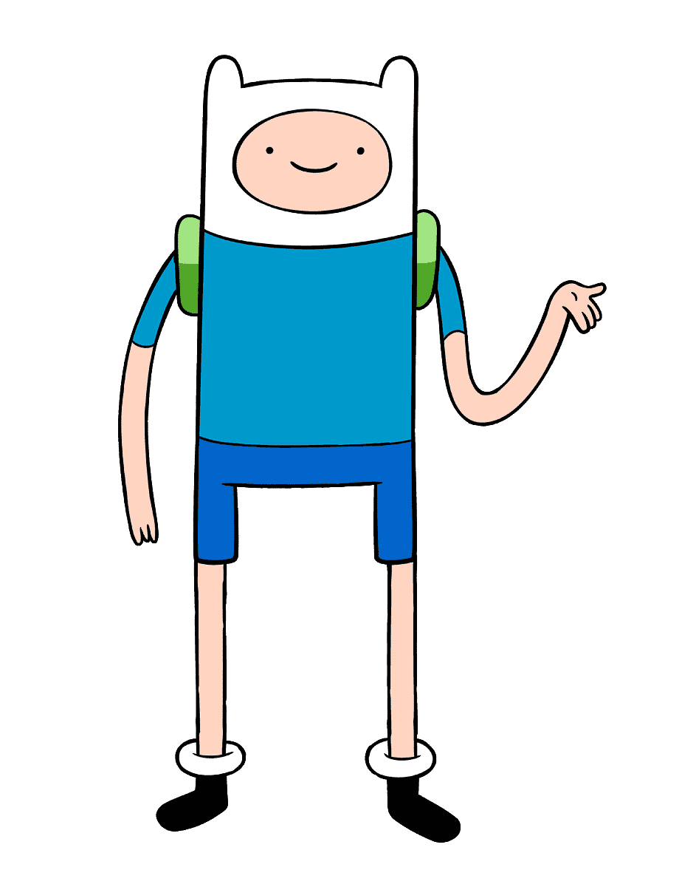
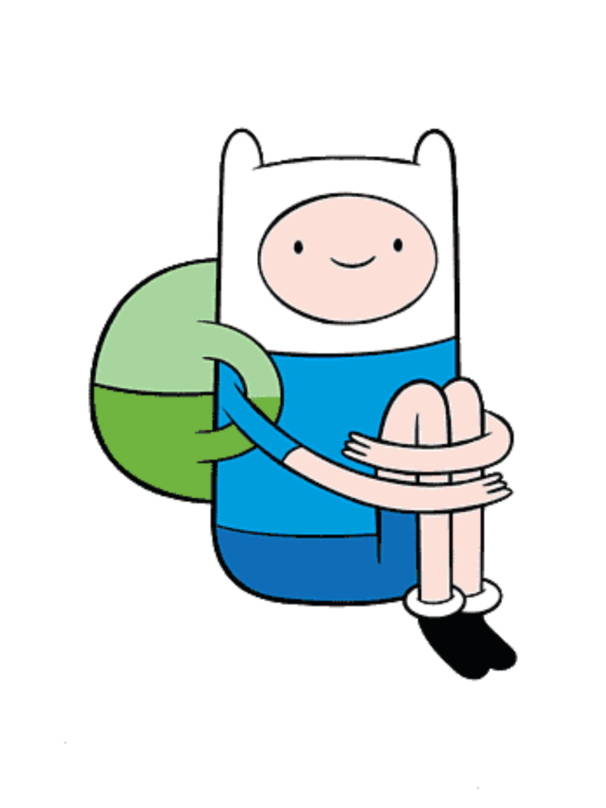
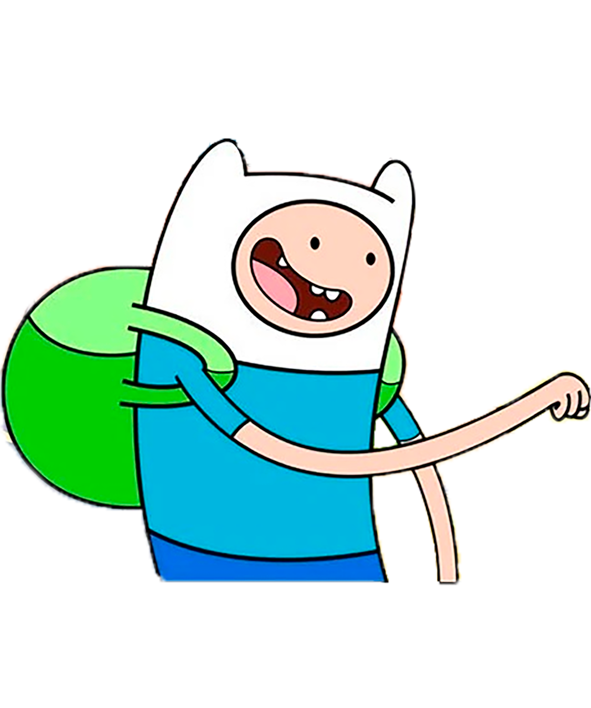

Finn
El Humano



Finn el Humano es un personaje que tiene muchas curiosidades. Por ejemplo, a menudo busca aventuras junto a su amigo Jake el perro.
Finn suele vestir una camiseta azul y pantalones cortos. Lleva una mochila verde y, en versiones más recientes, tiene un brazo robótico.